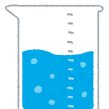

仮説を立てたら、次は実験でその仮説が正しいか確かめましょう。
実験をする時は、「実験群」と「コントロール群」を分ける事が大切です。
「実験群」と言うのは実験をするもの、「コントロール群」と言うのは何もしないものです。
例えば、鉄のさび方を実験するなら、何もしないで放っておく事も必要です。そうしないと、何かしたからその結果になったのか、何もしなくても同じ結果だったのか分からないからです。
例）
鉄を３つ用意する。
１つはそのまま、２つ目は水につけて、３つ目は塩水につけて放っておく。
そのままのが「コントロール群」。